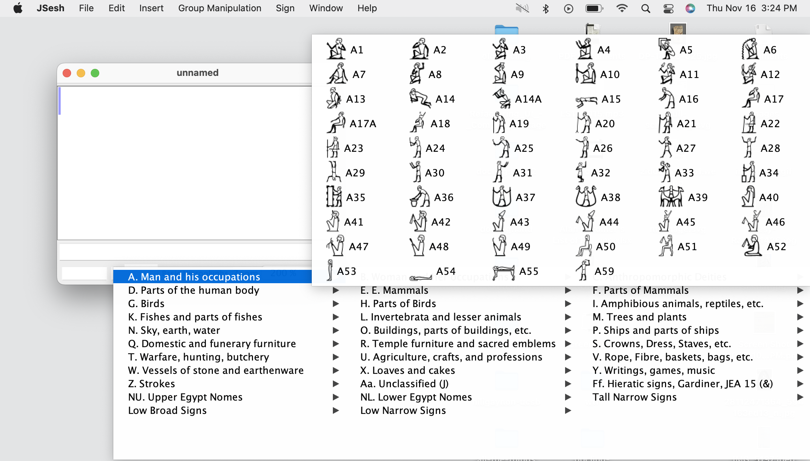

I have become rather obsessed with learning about Ancient Egyptian. As my background is in web-based language documentation, I am interested in the way that Egyptian text is digitized. I’m also interested in issues of usability in working with digital linguistic data. Digital Egyptology, if that’s a thing, offers a lot of interesting challenges in this regard.
How do I type hieroglyphs?
I have to confess that I find the available options for inputting hieroglyphs too specialized. It seems that the quasi-standard input method out there is either input the Manuel de Codage or “MdC†system to specify hieroglyphs, and then use a conversion system of some kind. The main tool that people seem to use for this is Serge Rosmorduc ’s JSesh, which is a very nice piece of software which has been well maintained over the years, and is very active. (WikiHiero is another tool, but it doesn’t go to Unicode hieroglyphs.)
There are many other tools that cover various aspects of handling hieroglyphic text, but for me they all fail in one regard: I don’t know many hieroglyphs, so finding in a list takes a long time. Even when the software provides a list, carrying out a visual search among… well, suppose you are looking for the “headstand guy”:
How long does it take you to find him in the list?
In JSesh, you’d navigate to the “Man and his occupations†category, and eventually you’d find him:

There he sits, er, hand-stands, at A29. Not too
bad.
But what if you don’t know the name of the sign? What if you don’t know the Gardiner category? You almost certainly haven’t memorized the Gardiner number — there are over 1000 of them! So there’s nothing for it but to search. And search. And search.
What’s wrong with the Gardiner classification?
Well, nothing, in a sense. It’s proven to be a very useful system for classifying hieroglyphs. But it’s not a very good system for finding them. The problem is that the same sign can reasonably be classified in more than one way. Wikipedia offers a good summary of the problem, with regard to this sign:
Gardiner does not cross-index signs; once put on the list, other significant uses may be overlooked. One example of this is 𓅒
G16, nbtỉ, the ideogram for the Two Ladies, goddesses Wadjet as the cobra and Nekhbet as the white vulture. These are the protective and patron goddesses of the separate Egyptian kingdoms that joined into ancient Egypt, who were both then displayed on the uraeus of Wadjet when the unification occurred and afterward considered jointly to be the protectors of Egypt and the pharaohs. This ideogram is listed only in the bird list (G), and overlooked on the deity list (C) and the reptile list (I).
I don’t know about you, but my reaction is “what the heck is this
thing doing in the Bird category�

And then, there are signs that are just weird, like this one:
What the heck is that? A spark plug? What category is it in? As it happens, it’s a variant of
…which is a “drill for beads”… which is in the “Agriculture, crafts, and professions†category. Alrighty then. It’s not that it’s a bad classification or something, it’s just that it’s not predictable from looking at the hieroglyph itself.
Just use Manuel de Codage codes…
So, I hear you say, “That’s why we have Manuel de Codage.†I’m no expert, but I don’t see that as a solution either, because it assumes that you know the values for all the hieroglyphs. If you’re a learner, that’s not the case. Clearly, it’s a viable approach for more experienced students, but it’s not a good solution for learners. There’s also this nagging fact that Manuel de Codage tends to become a replacement for Unicode hieroglyphs, even though they came about decades ago, when Unicode hieroglyphs were not available. I for one want to see the actual characters I’m studying, not a transliteration of them. Also, which transliteration should be used? A given hieroglyph can be transliterated in more than one way, and if it’s a determinative, it’s often not transcribed at all. (The whole topic of annotating the uses of hieroglyphs is a whole ’nother can of worms, but for me at least, until there’s a story for writing down he hieroglyphs reasonably effectively, that problem is out of scope.) In any case, I’m not the only one who thinks that MdC is not a good solution for inputting hieroglyphs.
It’s not just categorization we need — we also need tagging.
What if you were trying to talk to another student of Ancient Egyptian about a particular hieroglyph
- 𓀡
- “The upside-down guy.”
- “The headstand one.”
- “The one walking on his hands.”
- 𓅒
- “The uraeus hieroglyph.”
- “That one with the snake in it.”
Etc, etc. What it really comes down to is something more akin to tagging or labeling than classification. In fact, we can think of other, weirder ways to “tag†hieroglyphs:
- 𓅒
- “two-by-two grid†- the layout
- “two baskets†- counting sub-signs
- “Wadjet†- relevant name
- “Nekhbet†- relevant name
- “Two Ladies†- relevant label
And so forth. Such labels are particularly relevant for hieroglyphs that are hard to draw —like the “headstand guy†above, or my beloved derpy duck:
Oh wait, that’s a duckling, not a duck. Looks like a duck to me.
“Two arms upraised”?? Come on. That’s clearly a “field goal”. Clearly.
Anyway, there’s more than one way to name a hieroglyph.